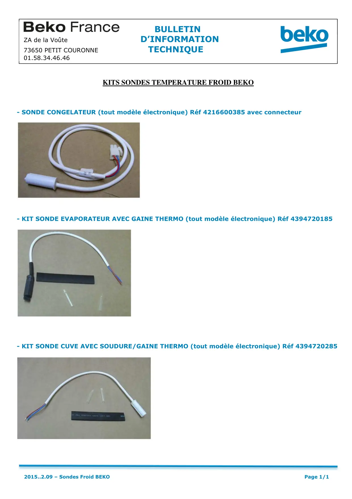

Remplacement sonde

KITS SONDES TEMPERATURE FROID BEKO- SONDE CONGELATEUR (tout modèle électronique) Réf 4216600385 avec connecteur- KIT SONDE EVAPORATEUR AVEC GAINE THERMO (tout modèle électronique) Réf 4394720185- KIT SONDE CUVE AVEC SOUDURE/GAINE THERMO (tout modèle électronique) Réf 4394720285BULLETINZA de la Voûte D’INFORMATION73650 PETIT COURONNE TECHNIQUE01.58.34.46.462015..2.09 – Sondes Froid BEKOPage 1/1
1 / 1